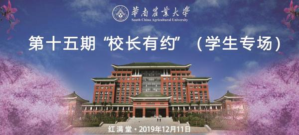
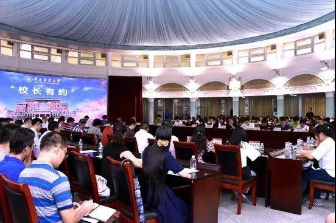
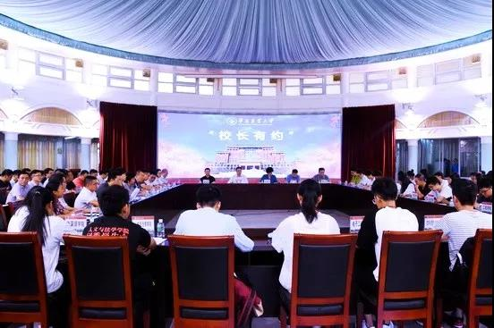

第十五期校长有约（学生专场）等你来！
12月11日15:00 红满堂
你的权益 我们在意
|
“校长有约”是校领导与师生面对面沟通的平
台，由校长带领部处（单位）负责人与师生代表
进行座谈交流，直接回应或讨论研究师生学习工
作生活中亟待解决的问题，积极听取师生对学校
建设发展的有关意见与建议，设有学生专场与教
工专场。
|
还记得今年六月的校长有约（学生专场）吗？
相信一直关注的小伙伴
一定很想知道这些提案的后续跟进吧
下面就跟着校会君
一起来回顾一下第十四期已解决落实的问题吧
第十四期“校长有约”（学生专场）活动
已落实完成的事项
1.关于学校创建官方抖音号的问题。
（提议人：电子工程学院 罗名珊）
宣传部已于2019年6月创建官方抖音号。
2.关于把研究生就业指导作为必修课的问题。
(提议人：公共管理学院 麦映琳)
经就业指导中心与研究生院调研，暂不适合开展研究生就业指导必修课。针对学生就业指导需求，就业指导中心拟根据实际情况开展研究生“研究生职业生涯”等团体辅导工作坊；研究生院已开设《研究生生涯设计与职业指导》、《研究生学术与职业素养讲座》等选修课和在线MOOC课程，拟进一步协助就业指导中心开展招聘会、宣讲会等，共同辅助研究生找到合适工作。
3.关于增加本科生通识教育课程及规范慕课考核要求的问题。
(提议人：农学院 刘俊杰）
教务处本学期已增加30余门新通识教育课程，可以满足学生选课需要；同时，为进一 步打造金课，每学期精选名校名师主讲精品在线课程，并遴选一批“大国三农”通识课程、习近平教育思想课程供学生修读。目前，各慕课平台课程修课的考核方式已进行明确规定，学生自选修读的所有通识教育课程均纳入综合测评中。
4.关于增加专业基础课学时，提高课程考核要求的问题。
(提议人：经济管理学院 吴诗雨）
教务处正在完善以“加强形成性评价”为核心的课程考核评价改革，积极引导教师采取灵活多样的形式进行平时考核，把培养学生的能力、素质、创新因素等方式作为考核重点，提高学生实际应用与分析问题的能力，逐步实现规范化管理。
5.关于在学校紫荆e站综合服务大厅设置方便师生互动 的“教务处直通车”问题。
(提议人：公共管理学院 莫景深）
新教务系统账号信息已对接紫荆e站综合服务大厅“教务处直通车”，同学们可随时查询课表、成绩、空教室情况，也可直接留言提问进行互动。
6.关于新教务系统选课出现网络拥堵、课程目录有误等现象的问题。
(提议人：待确定)
教务处会同相关技术人员每天排查并及时解决该系统试运行中出现的各种问题。同时在课程预选、正选和补退选阶段，根据实际情况，适当延长了选课时间，本学期各类课程选课已顺利完成。
7.关于给予艺术类专业实践课购置材料补贴的问题。
(提议人：艺术学院 庄淳淼）
艺术学院拟根据专业实践课程的实际耗材情况，分专业上浮调整实践课材料补贴，报学校审批。
8.关于加大启林南思创园共享建设与宣传力度的问题。
(提议人：公共管理学院 黄俊毅）
学生处已制定思创园相关管理制度，并成立学生宣讲团对思创园进行宣传介绍，同时多渠道公布思创园借用流程及使用情况。目前，同学们可随时在师生办事服务大厅申请借用。
9.关于加强环保宣传教育，实施垃圾分类及合理设置快递包装回收点的问题。
(提议人：资源环境学院 钟绮敏）
学生处已会同后勤处、各学院和学生社区自管会开展垃圾分类宣传工作。目前学生社区架空层正在进行改造，暂不具备设置智能回收箱的条件，现已要求清洁员每日清理快递包装，组织学生自管会联合校勤工、校青志等学生开展书籍和衣物回收活动。
10.关于在学生宿舍楼安装安全紧急铃的问题。
(提议人：材料与能源学院 胡嘉敏）
紧急铃系特种设备，学生宿舍楼不具备安装条件；学生处已在值班台公示值班人员电话，方便学生随时联系保障安全。
11.关于根治宿舍下水管道漫水的问题。
(提议人：艺术学院 唐琬淇）
学生处已逐一检查和维修相关排水系统，暂未发现漫水情况，拟持续跟进。
12.关于在燕山宿舍区增设24小时自动贩卖机的问题。
(提议人：待确定)
学生处已提出学生社区引进自动售货机的需求；资产管理处已委托相关公司进行评估，拟于2019年12月完成学生社区自助售货机场地的招标工作。
13.关于统一各学院志愿时综合测评加分标准的问题。
(提议人：校青志 梁毓敏）
学生处已进行专题调研，发现每个学院对“志愿服务或公益活动类”的加分细则各有侧重，现已要求各学院进一步细化完善志愿服务加分，且每学年完成综合测评工作后，向学生收集建议和意见，对本学院的综合测评加分细则进行修订与公示,无异议后方能公布实施。
14.关于构建整合大学生创新创业与学科竞赛信息网上平台的问题。
(提议人：大学生创业服务园 李娜）
创新创业学院已在学院网站开设专栏，详细介绍各学院的学科竞赛项目。同时每周举办创新创业论坛，同学们可关注“华农科联”微信公众号获取论坛举办信息。
15.关于增加消防演练，提高消防意识的问题。
(提议人：食品学院 钟思怡）
保卫处已增加消防实操演练频率，组织校卫队员与新生进行消防实操培训，拟进一步深入学生宿舍与教工住宅区进行消防安全知识宣传和应急逃生演练等工作，会同各学院定期开展消防安全知识讲座，提高师生消防安全意识。
16.关于增加社区自习室及教四109大课室安装空调的问题。
(提议人：经济管理学院 陈美池）
学生处拟优化宿舍架空层规划，逐步在学生社区适当增加自习室；目前，教四109大课室已安排上课,教务处拟于2020年3月至8月不在该课室安排课程，以便施工安装空调。
17.关于普及图书馆网络资源知识及知网使用方法的问题。
(提议人：海洋学院 王玉娜）
图书馆通过主页、微信公众号、教工QQ群、学生QQ群、主、分馆宣传栏等线上线下的媒体，大力宣传图书馆的文献信息资源及信息素养教育培训计划，使学生有更 多的途径获得图书馆提供的各项服务。
18.关于恢复校巴实时查询功能的问题。
(提议人：资源环境学院 苏晓莹）
后勤处已要求佳华利道公司更换了校巴GPS定位设备，本学期初已恢复校巴实时查询功能。
19.关于图书馆增加文史哲相关专业数据库，并将农史室与图书馆纸质版书籍电子化的问题。
(提议人：人文与法学学院 丘文干）
图书馆已增加文史哲相关图书，拟待经费允许时考虑将纸质版书籍电子化；农史室正在对古籍、民国文献进行数字化。
20.关于秩年校友返校日引入活动平台管理模式的问题。
(提议人：华南农业大学校友服务中心 梁金莹）
校友会已引入“友笑”全球校友活动平台，推出秩年校友返校日等各类丰富多彩的校 友活动。目前正在推动其他学院使用该平台，为学院和地方校友分会开展校友工作 提供更多便利，更好地服务校友。
21.关于普及新生性与生殖健康教育的问题。
(提议人：校红会 张家慧）
学生处已要求各学院利用新生入学教育、军训、“12·1世界艾滋病日”等，组织开展 预防艾滋病专题宣传教育活动。同时会同校红十字会开展普及学生公共卫生安全教育；校医院拟配合做好相关知识宣传和专家推荐工作，艾滋病与性病自愿检测业务已纳入皮肤科室。

看了这么多的往期提案的跟进
你是否会更加期待
本期校长有约（学生专场）呢
师生参与校务管理、建言献策的途径
1.登录网办大厅或学校主页的“校长信箱”写信；
2.发邮件至邮箱xz@scau.edu.cn；
3.在每月举行的校领导接待日预约访谈;
4.参加“校长有约”建议征集活动；
5.报名参加“校长午餐会”或“校长下午茶”；
6.致电校长办公室督办信访科020-85280015；
7.走访校长办公室督办信访科（办公大楼603室）；
8.寄信至华南农业大学校长办公室督办信访科。

这个冬天
期待与你相遇
第十五期校长有约（学生专场）
我们红满堂见
图文编辑 | 校会宣传部 邱则满 陶菁艺
视觉支持 | 校会宣传部
初审 | 蔡竹轩
复审 | 陈亚励
终审 | 陈宇栋
微博@华南农业大学学生会